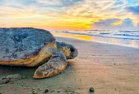

Turtles are fascinating and ancient creatures that have inhabited our planet for millions of years. They play vital roles in ecosystems, both on land and in water, and are considered keystone species. Unfortunately, turtles face numerous threats that endanger their survival and have led to a significant decline in their populations worldwide. These threats arise from various factors, including human activities, environmental changes, and natural predators. Understanding these threats is crucial for developing effective conservation strategies and ensuring the long-term survival of these remarkable creatures.
Turtles face a range of threats that impact their populations and habitats. These threats can be categorized into several key areas:
Poaching:Poaching is a serious threat to many turtle species, driven by the demand for their meat, eggs, shells, and body parts. Illegal trade in turtles and their products significantly reduces their populations and disrupts their natural ecosystems
Habitat Loss and Degradation:Destruction and alteration of habitats, such as nesting beaches, wetlands, and coral reefs, due to coastal development, pollution, deforestation, and human activities, disrupts nesting sites, foraging areas, and migration routes
Climate Change:Rising temperatures and changing weather patterns can affect turtle nesting sites and hatchling sex ratios. Sea-level rise also poses a threat to nesting beaches.
Pollution:Pollution,including marine debris, plastics, oil spills, and chemical contaminants, can entangle turtles, cause ingestion of harmful substances, and degrade their habitats
Lack of Awareness and Conservation Efforts:Insufficient public awareness, limited enforcement of protective measures, and inadequate conservation initiatives contribute to the ongoing threats faced by turtles
Hunting and Overharvesting:Some cultures and communities still hunt turtles for their meat, eggs, shells, or traditional medicinal purposes, leading to population declines and loss of genetic diversity
Illegal Wildlife Trade:Turtles are often poached and trafficked for their meat, eggs, shells, and body parts, leading to population declines, especially in rare and endangered species.

Addressing the threats faced by turtles requires a multi-faceted approach involving various stakeholders, including governments, conservation organizations, local communities, and individuals. Here are some solutions and strategies that can help mitigate the threats to turtle populations: